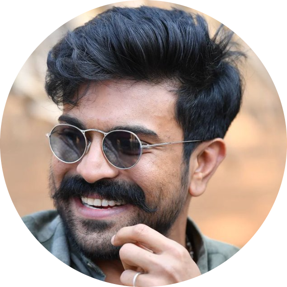

|  |
MBA post-graduate in Marketing and human resoures . Worked as a Phone Banking officer in Kotak mahindra BANK. |
Konidela Ram Charan Teja (born 27 March 1985) is an Indian actor, producer, and entrepreneur who primarily works in Telugu films.
One of the highest-paid actors in Indian cinema,he is the recipient of three Filmfare Awards and two Nandi Awards.
Since 2013, he has featured in Forbes India's Celebrity 100 list.
| year | movie | director |
|---|---|---|
| 2007 | chirutha | puri |